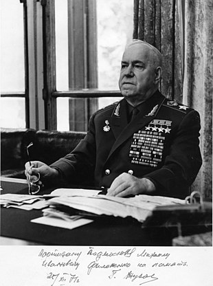

Георгий Константинович Жуков

Георгий Константинович Жуков(9 февраля 1955 — 26 октября 1957). В годы Великой Отечественной войны занимал посты начальника Генерального штаба РККА (июнь-июль 1941 г.), члена Ставки Главного командования (с 23 июня 1941 г.), Ставки Верховного Командования (с 10 июля 1941 г.), Ставки Верховного Главнокомандования (с 8 августа 1941 г.), командующего Ленинградским фронтом (с 14 сентября), командующего Западным фронтом (с 10 октября).В январе 1943 Жукову было присвоено звание Маршала Советского Союза. Он стал первым Маршалом СССР с начала войны.С ноября 1944 года командующий войсками 1-го Белорусского фронта, которые совместно с войсками 1-го Украинского и 2-го Белорусского фронтов осуществили Висло-Одерскую операцию, затем разгромили берлинскую группировку немецко-фашистских войск и овладели Берлином. 8 мая 1945 года Георгий Жуков по поручению советского Верховного Главнокомандования принял в Карлсхорсте (Берлин) капитуляцию фашистской Германии.В нашем городе был построен дом Г. К. Жукова. Строительство происходило в 30 годы прошлого столетия. здание располагается на современной улице Рабоче-Крестьянской, почти напротив воинской части. Сегодня оно представляет собой жилой дом, а до Великой Отечественной войны в нём находилась гостиница воинской части.В 1974 году 18 июня Жуков Георгий Константинович ушел из жизни. Руководством было решено похоронить его на Красной площади со всеми почестями как выдающегося и значимого военного и государственного деятеля.
На главную